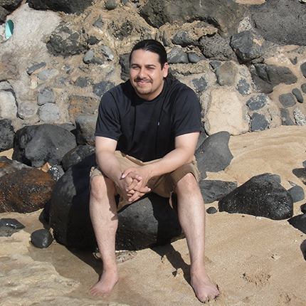

ABOUT
Developer by trade. Systems thinker by habit.
I’m a software engineer and systems-integration professional with 10+ years of experience building and supporting applications for real operational environments. My strongest work sits at the intersection of application development, identity and data integration, accessibility, and practical user experience.

WHAT I BRING
End-to-end ownership
I’m comfortable moving from discovery and requirements through implementation, database work, deployment, troubleshooting, and iterative improvement. That breadth is especially useful when a problem crosses application, infrastructure, identity, or third-party boundaries.
HOW I WORK
Practical engineering
I favor maintainable solutions that reduce operational friction. Security, accessibility, performance, and supportability are treated as engineering concerns rather than late-stage polish.
WHERE I’M HEADED
AI-enabled engineering
I’m increasingly applying AI to developer tooling, accessibility, automation, and application workflows while keeping reliability, privacy, and human review in the design.